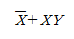
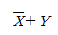
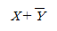
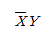
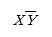
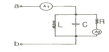
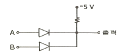

소방설비기사(전기분야) (2005-09-04 기출문제)
1과목: 소방원론
1. 다음 중 사염화탄소 소화기를 설치할 수 있는 장소는?
- 사무실
- 무창
- 지하층
- 환기가 잘 되는 실내
(정답률: 72%)

2. 연쇄반응과 관계가 없는 것은?
- 증발연소
- 분해연소
- 작열연소
- 불꽃연소
(정답률: 59%)
3. 제1류 위험물로서 그 성질이 산화성고체인 것은?
- 아염소산염류
- 과염소산
- 금속분류
- 셀룰로이드류
(정답률: 78%)
4. 다음 설명 중 가장 옳은 것은?
- 가연물질의 연소에 필요한 산화제의 역할을 할 수 있는 것으로 오존, 불소, 네온이 있다.
- 아르곤은 산화, 분해, 흡착반응에 의해 자연발화를 일으킬 수 있다.
- 활성화 에너지의 값이 적을수록 연소가 잘 이루어진다.
- 인화온도가 낮은 것은 연소온도가 높다.
(정답률: 70%)
5. 가연성 액체에 점화원을 가져가서 인화된 후에 점화원을 제거하여도 가연물이 계속 연소되는 최저온도를 무엇이라 하는가?
- 인화점
- 폭발온도
- 연소점
- 자동발화점
(정답률: 80%)
6. 가연성가스를 액화시켜 저장한 저장탱크 내의 액화가스가 누설되어 저장탱크 상부에 부유 또는 확산하여 있다가 착화원과 접촉할 경우 폭발을 일으키며 이것으로 인하여 저장탱크 또는 저장용기가 파열되어 그 내부에 있던 액화가스가 공중으로 확산하면서 화구 형태의 폭발현상을 보여줄때를 말한다. 이런 것을 무엇이라 하는가?
- 플래시오버
- 오일오버
- 블레비현상
- 폭굉현상
(정답률: 76%)
7. 골재를 사용한 콘크리트 중 내화성이 가장 좋지 못한 것은?
- 화강암
- 현무암
- 인공경량 골재
- 안산암
(정답률: 43%)
8. 물에 황산을 넣어 묽은 황산을 만들때 발생되는 열은?
- 연소열
- 분해열
- 용해열
- 자연발열
(정답률: 66%)
9. 유전지대의 화재는 질소폭약을 투하해서 소화를 한다. 이렇게 소화하는 효과는? (문제 오류로 실제 시험에서는 가, 라번이 정답처리 되었습니다. 여기서는가번을 누르면 정답 처리 됩니다.)
- 희석효과
- 부촉매효과
- 냉각효과
- 질식효과
(정답률: 69%)
10. 경유화재가 발생할 때 주수소화가 부적당한 이유는?
- 경유는 물보다 비중이 가벼워 물위에 떠서 화재확대의 우려가 있으므로
- 경유는 물과 반응하여 유독가스를 발생하므로
- 경유의 연소열로 인하여 산소가 방출되어 연소를 돕기 때문에
- 경유가 연소할 때 수소가스를 발생하여 연소를 돕기 때문에
(정답률: 82%)
11. 표면연소만 일어나는 것은?
- 목재
- 합성수지
- 숯
- 섬유질
(정답률: 84%)
12. 가연물질이 열분해되어 생성된 가스 중 독성이 가장 큰 것은?
- 일산화탄소
- 염화수소
- 이산화탄소
- 포스겐가스
(정답률: 75%)
13. 목재인 가연물이 착화에너지가 충분하지 못하여 연소하지 못하고 분해가스만 방출하는 현상을 무엇이라 하는가?
- 탄화현상
- 경화현상
- 조해현상
- 풍해현상
(정답률: 79%)
14. 연소와 관계 깊은 화학반응은?
- 중화반응
- 치환반응
- 환원반응
- 산화반응
(정답률: 84%)
15. 다음 중 자연발화 조건이 아닌 것은?
- 열전도율이 클 것
- 발열량이 클 것
- 주위의 온도가 높을 것
- 표면적이 넓을 것
(정답률: 79%)
16. 내장재의 발화시간에 영향을 주는 요소가 아닌 것은?
- 열전도율
- 발화점
- 화염확산 속도
- 복사플럭스
(정답률: 37%)
17. 다음 중 액체탄화수소 수송시 정전기에 의한 화재발생을 억제하기 위한 조치로서 적합하지 않은 것은?
- 유속을 1m/sec이하로 낮게 한다.
- 배관을 와류가 생성되지 않게 설계한다.
- 불순물 등의 제거시 비전도성의 조밀한 필터를 사용한다.
- 수송 ㆍ 이송시 낙차를 작게 한다.
(정답률: 52%)
18. 인화성이 있는 것은?
- 질소
- 이산화탄소
- 아황산가스
- 일산화탄소
(정답률: 41%)
19. 건물화재시 연기가 건물 밖으로 이동하는 주된 요인이 아닌 것은?
- 굴뚝효과
- 건물내부의 냉방 작동
- 온도상승에 따른 기체의 팽창
- 기후조건
(정답률: 68%)
20. 화학소화 중 연쇄반응억제에 의한 소화방법으로 가장 옳은 것은?
- 화학반응으로 탄산가스가 발생하여 소화한다.
- 불꽃연소에 주로 적응되는 소화방법이다.
- 금속화재, 화약화재 등에 적응되는 소화방법이다.
- 할로겐화물인 경우 할로겐 원자수의 비율이 작을수록 소화효과가 크다.
(정답률: 27%)
2과목: 소방전기회로
21. 전류력계형 계기의 장점에 해당하는 것은?
- 직류와 교류를 같은 눈금으로 측정할 수 있다.
- 코일의 인덕턴스에 의한 주파수의 영향이 크다.
- 가동코일형에 비하여 외부자계의 영향을 받기 쉽다.
- 고정코일에 흐르는 전류로 자장을 만들기 때문에 가동코일형에 비해서 자장이 약하다.
(정답률: 65%)
22. R-L 직렬회로에서 시정수의 값이 클수록 과도현상의 소멸되는 시간 은 어떻게 되나?
- 짧아진다.
- 길어진다.
- 과도기가 없어진다.
- 관계가 없다.
(정답률: 55%)
23. 논리식

를 간단히 나타낸 것은?



(정답률: 75%)
24. SCR의 양극 전류가 10A일 때 게이트 전류를 반으로 줄이면 양극 전류는 몇 A 인가?
- 0
- 5
- 10
- 20
(정답률: 79%)
25. 요소와 단위의 연결 중 틀린 것은?
- 자속밀도 - Wb/m2
- 유전속밀도 - C/m2
- 투자율 - AT/m
- 유전률 - F/m
(정답률: 42%)
26. 다이오드를 사용한 정류회로에서 과대한 부하전류에 의하여 다이오드가 파손될 우려가 있을 경우의 적당한 대책은?
- 다이오드를 직렬로 추가한다.
- 다이오드를 병렬로 추가한다.
- 다이오드의 양단에 적당한 값의 저항을 추가한다.
- 다이오드의 양단에 적당한 값의 콘덴서를 추가한다.
(정답률: 81%)
27. 소화전 펌프에서 압력기동방식의 최초 신호원으로 타당한 것은?
- 소화전 박스 상부의 기동 ON, OFF 스위치
- 소화전 펌프모터 기동기의 써머릴레이
- 소화전 배관과 연결된 압력챔버의 압력스위치
- 소화전 펌프모터 기동기의 타이머
(정답률: 58%)
28. 그림과 같은 회로에서 단자 a, b 사이에 주파수 f[Hz]의 정현파 전압을 가했을 때 전류계 A1, A2의 값이 같았다. 이 경우 f, L, C 사이의 관계로 옳은 것은?

- f=1/2πLC
- f=1/√2πLC
- f=1/2π√LC
- f=1/√LC
(정답률: 80%)
29. 그림과 같은 게이트의 명칭은?

- AND
- OR
- NOR
- NAND
(정답률: 60%)
30. 정현파 교류에서 최대치와 실효치의 관계로 옳은 것은? (단, Im은 최대치, I는 실효치임.) (문제 오류로 복원중입니다) (정답은 가 입니다.)
- 복원중
- 복원중
- 복원중
- 복원중
(정답률: 69%)
31. 저항 R과 인덕턴스 L의 직렬회로에서 시정수는?
- RL
- R/L
- L/R
- L/Z
(정답률: 62%)
32. 단상 변압기 3대를 △결선하여 부하에 전력을 공급하고 있는데, 변압기 1대가 고장나서 V결선으로 바꾼경우에는 고장전의 몇 % 출력을 낼수 있는가?
- 50
- 57.7
- 66.7
- 86.6
(정답률: 69%)
33. 자장의 세기의 설명 중 잘못 된 것은?
- 수직 단면적의 자력선 밀도와 같다.
- 단위 길이당 기자력과 같다.
- 자속 밀도에 투자율과 곱한 것과 같다.
- 단위 자극에 작용하는 힘과 같다.
(정답률: 53%)
34. 목표값이 미리 정해진 시간적 변화를 하는 경우 제어량을 그것에 추종시키기 위한 제어는?
- 추종제어
- 정치제어
- 비율제어
- 프로그래밍제어
(정답률: 30%)
35. 축전지의 부동충전방식에 대한 일반적인 회로계통은?
- 교류 → 필터 → 변압기 → 정류회로 →주하보상 → 부하↓ 전지
- 교류 → 변압기 → 부하보상 → 정류회로 → 필터 → 부하 ↓ 전지
- 교류 → 변압기 → 필터 → 정류회로 → 전지 → 부하 ↓ 부하보상
- 교류 → 변압기 → 정류회로 → 필터 →부하보상 → 부하 ↓ 전지
(정답률: 43%)
36. 정현파 v = 50 sin(628t - π/6 ) 인 파형의 주파수[Hz] 는?
- 약 10
- 약 60
- 약100
- 약 200
(정답률: 45%)
37. 정속도 운전의 직류발전기로 작은 전력의 변화를 큰 전력의 변화로 증폭하는 발전기는?
- 앰플리다인
- 로젠베르그발전기
- 솔레노이드
- 서보전동기
(정답률: 71%)
38. 3상 권선형 유도전동기의 기동법은?(오류 신고가 접수된 문제입니다. 반드시 정답과 해설을 확인하시기 바랍니다.)
- 콘도르퍼 기동법
- 게르게스법
- 2차저항법
- 리액터법
(정답률: 64%)
39. 프로세스제어의 제어량이 아닌 것은?
- 액위면
- 유량
- 온도
- 물체의 자세
(정답률: 67%)
40. 3[Ω] 과 6[Ω] 의 저항을 직렬로 접속하고 전압을 가할 때 3[Ω]에 걸리는 전압은 6[Ω]에 걸리는 전압의 몇배가 되는가?
- 3
- 2
- 1
- 0.5
(정답률: 34%)
3과목: 소방관계법규
41. 다음 방염처리 대상 물품에 대한 설명 중 틀린 것은?
- 창문에 설치하는 커텐류(브라인드를 포함한다.)
- 카페트, 두께가 3밀리미터 미만인 벽지류로서 종이벽지를 제외한 것
- 전시용 합판 또는 섬유판, 무대용 합판 또는 섬유판
- 암막 ㆍ 무대막
(정답률: 68%)
42. 위험물제조소 등에 대한 설명으로 틀린 것은?
- 제조소 등을 설치하고자 하는 자는 대통령령이 정하는 바에 따라 그 설치장소를 관할하는 시 ㆍ 도지사의 허가를 받아야 한다.
- 지정수량의 배수를 변경하고자 하는 자는 변경하고자 하는 날의 7일전까지 행정자치부령이 정하는 바에 따라 시
- 군사용 위험물시설을 설치하고자 하는 군부대의 장이 관할 시 ㆍ 도지사와 협의한 경우에는 규정에 따른 허가를 받은 것으로 본다.
- 위험물 탱크 안전성능시험은 위험물 탱크 안전성능시험자만이 할 수 있다.
(정답률: 35%)
43. 연 1회이상 소방시설관리업자 또는 방화관리자로 선임된 소방시설 관리사, 소방기술사가 종합정밀점검을 의무적으로 실시하는 특정소방대상물은?
- 옥내소화전 설비가 설치된 연면적 1,000m2 이상
- 스프링클러설비가 설치된 연면적 3,000m2 이상
- 물분무등 소방설비가 설치된 연면적 5,000m2 이상
- 11층 이상의 아파트
(정답률: 51%)
44. 다음 중 특수가연물에 해당되지 않는 것은?
- 면화류 200킬로그램 이상
- 나무껍질 및 대팻밥 400킬로그램 이상
- 넝마 및 종이부스러기 500킬로그램 이상
- 사류(絲類) 1,000 킬로그램 이상
(정답률: 68%)
45. 다음 중 구급대의 편성기준은 누가 정하는가?
- 총리령
- 소방법령
- 시 ㆍ 도의 조례
- 행정자치부령
(정답률: 28%)
46. 다음 중 소방대에 속하지 않는 조직체는?
- 소방공무원
- 방화관리종사원
- 의무소방원
- 의용소방대원
(정답률: 62%)
47. 화재경계지구의 지정대상지역으로 적당하지 아니한 것은?
- 목조건물이 밀집한 지역
- 공장 ㆍ 창고가 밀집한 지역
- 위험물의 저장 및 처리시설이 밀집한 지역
- 소방시설 ㆍ 소방용수시설 또는 소방출동로가 부족한 지역
(정답률: 56%)
48. 소방용수시설 및 지리조사의 실시 회수는 어느 정도가 적당한가?
- 주1회 이상
- 주2회 이상
- 월1회 이상
- 분기별 1회 이상
(정답률: 72%)
49. 제3류 위험물에 해당하는 것은?
- 염소산 염류
- 나트륨
- 무기과산화물
- 유기과산화물
(정답률: 44%)
50. 다음 중 제3류 자연발화성 및 금수성 위험물이 아닌 것은?
- 적린
- 황린
- 금속의 수소화물
- 칼륨
(정답률: 51%)
51. 소방시설공사업자는 소방시설을 하고자 하는 경우 소방시설공사착공신고서를 누구에게 제출해야 하는가?
- 시 ㆍ 도지사
- 행정자치부장관
- 소방본부장 또는 소방서장
- 대통령
(정답률: 46%)
52. 방염업에 대한 영업정지를 명하는 경우로서 영업정지처분에 갈음하여 과징금을 부과할 수 있는 바 과징금의 한도액은 얼마인가?
- 1,000 만원 이하
- 2,000 만원 이하
- 3,000 만원 이하
- 5,000 만원 이하
(정답률: 56%)
53. 다음 중 예방규정을 정하여야 하는 제조소 등이 아닌 것은?
- 지정수량의 10배 이상의 위험물을 취급하는 제조소
- 지정수량의 100배 이상의 위험물을 저장하는 일반 취급소
- 지정수량의 150배 이상의 위험물을 저장하는 옥내 저장소
- 암반탱크저장소
(정답률: 50%)
54. 관계인의 승낙이 있어야 소방검사를 할 수 있는 장소는?
- 여인숙
- 연립주택
- 기숙사
- 호텔
(정답률: 63%)
55. 소방대상물의 개수명령에 필요한 조치로서 옳지 않은 것은?
- 소방대상물의 용도변경
- 소방대상물의 개수
- 소방대상물의 이전
- 소방대상물의 사용의 금지
(정답률: 52%)
56. 2급 방화관리대상에 대한 설명 중 틀린 것은?
- 스프링클러설비
- 옥내소화전설비 또는 자동화재탐지설비를 설치하는 특정소방대상물
- 가스제조설비를 갖추고 도시가스사업허가를 받아야하는 시설 또는 가연성가스를 100톤 이상 3천톤 미만 저장
- 지하구
(정답률: 39%)
57. 화재발생시에 소방서는 소방본부의 종합상황실에 소방본부는 행정자치부의 종합상황실에 보고하여야 하는 바 사상자가 얼마 이상일 경우이에 해당되는가?
- 사상자가 5인 이상 발생한 화재
- 사상자가 7인 이상 발생한 화재
- 사상자가 10인 이상 발생한 화재
- 사상자가 20인 이상 발생한 화재
(정답률: 63%)
58. 다음 중 건축허가동의 대상물이 아닌 것은? (문제 오류로 실제 시험에서는 모두 정답처리 되었습니다. 여기서는 가번을 누르면 정답 처리 됩니다.)
- 연면적 400제곱미터 이상인 건축물
- 차고
- 항공기격납고, 관망탑, 항공관제탑, 방송용 송 ㆍ 수신탑
- 지하층 또는 무창층이 있는 건축물로 바닥면적 200제곱미터 이상인 층이 있는 것.
(정답률: 64%)
59. 다음 중 소방법상의 소방대상물에 포함되지 않는 것은?
- 산림
- 항해중인 선박
- 선박
- 선박건조구조물
(정답률: 68%)
60. 제1종 판매취급소의 위험물을 배합하는 실의 기준으로 맞는 것은?
- 바닥면적은 5m2 이상 10m2 이하일 것
- 출입구 문턱의 높이는 바닥면으로부터 0.1m 이상으로 할 것
- 바닥은 위험물이 침투하지 아니하는 구조로 하고 경사를 두지말 것
- 내부에 체류한 가연성의 증기는 벽면에 있는 창문으로 방출할 것
(정답률: 47%)
4과목: 소방전기시설의 구조 및 원리
61. 비상방송설비를 기동장치에 의한 화재신호를 수신한 후 필요한 음량으로 화재발생 상황 및 피난에 유효한 방송이 자동으로 개시될 때까지의 소요시간은 몇 초 이하로 하여야 하는가?
- 5초
- 10초
- 20초
- 30초
(정답률: 79%)
62. 다음 특정소방대상물에 비상조명등을 설치하여야 하는 장소는?
- 경기장
- 의원
- 의료시설
- 여관
(정답률: 29%)
63. 자동식 사이렌설비에는 설비에 대한 감시상태를 몇 분간 지속한 후 유효하게 10분이상 경보를 발 할수 있는 축전지설비를 설치하여야 하는가?
- 20분
- 30분
- 45분
- 60분
(정답률: 71%)
64. 자동화재탐지설비의 음향설치 기준 중 맞는 것은?
- 지구음향 장치는 당해 소방대상물의 각 부분으로부터 하나의 음향장치까지의 수평거리가 25m 이하가 되도록 한다.
- 정격전압의 90% 전압에서 음향을 발할 수 있어야 한다.
- 음량은 부착된 음향장치의 중심으로부터 1m 떨어진 위치에서 80폰이상이 되도록 하여야 한다.
- 5층이상으로서 연면적이 3,000m2를 초과하는 소방대상물에 있어서는 2층이상의 층에서 발화시 발화층 및 직하층에 경보를 발하여야 한다.
(정답률: 66%)
65. 연기감지기의 설치기준으로 옳지 않은 것은? (문제 오류로 실제 시험에서는 나,라번이 정답처리 되었습니다. 여기서는 나번을 누르면 정답 처리 됩니다.)
- 부착높이 4m 이상 20m 미만에는 3종감지기를 설치할 수 없다.
- 복도 및 통로에 있어서 보행거리 30m 마다 설치한다.
- 계단 및 경사로에 있어서는 3종 수직거리 10m 마다 설치한다.
- 감지기는 벽이나 보로부터 1.5m 이상 떨어진 곳에 설치하여야 한다.
(정답률: 57%)
66. 비상콘센트설비의 전원회로의 공급용량은?
- 3상교류의 경우 3[kVA]이상
- 3상교류의 경우 1.5[kVA]이상
- 단상교류의 경우 3[kVA]이상
- 단상교류의 경우 1[kVA]이상
(정답률: 37%)
67. 지하4층, 지상5층의 소방대상물에 비상방송설비를 설치하였다. 지하3층에서 발화한 경우 우선적으로 경보를 하여야 할 층은?(관련 규정 개정전 문제로 여기서는 기존정답인 3번을 누르면 정답 처리 됩니다. 자세한 내용은 해설을 참고하세요.)
- 지하 2 ㆍ 3층
- 지하 1 ㆍ 2 ㆍ 3층
- 지하 1 ㆍ 2 ㆍ 3 ㆍ 4층
- 지하 1 ㆍ 2 ㆍ 3 ㆍ 4층, 지상1층
(정답률: 58%)
68. 공동주택의 2층에 설치하고자 하는 피난기구 중 적응성이 없는 것은?
- 피난사다리
- 피난용트랩
- 구조대
- 간이완강기
(정답률: 43%)
69. 무선통신 보조설비의 설치를 제외 할수 있는 소방대상물은?
- 지하층으로서 소방대상물의 바닥부분 2면 이상이 지표면과 동일하거나 지표면으로부터 깊이가 2m 이하인 경우에는 해당층에 한하여 설치하지 아니할 수 있다.
- 지하층으로서 소방대상물의 바닥부분 1면 이상이 지표면과 동일하거나 지표면으로부터 깊이가 2m 이하인 경우에는 해당층에 한하여 설치하지 아니할 수 있다.
- 지하층으로서 소방대상물의 바닥부분 3면 이상이 지표면과 동일하거나 지표면으로부터 깊이가 3m 이하인 경우에는 해당층에 한하여 설치하지 아니할 수 있다.
- 지하층으로서 소방대상물의 바닥부분 2면 이상이 지표면과 동일하거나 지표면으로부터 깊이가 1m 이하인 경우에는 해당층에 한하여 설치하지 아니할 수 있다.
(정답률: 65%)
70. 통로의 직선 길이가 30m 인 장소에 설치해야 하는 객석유도등의 설치 개수는?
- 5개
- 6개
- 7개
- 8개
(정답률: 60%)
71. 다음 중 누전경보기를 설치하여야 하는 장소는?
- 가연성증기가 다량으로 체류하는 장소
- 화약류를 저장 또는 취급하는 장소
- 습도가 높은 장소
- 온도의 변화가 없는 장소
(정답률: 62%)
72. 접지공사의 용도로서 서로 맞지 않는 것은?
- 제1종 접지공사 : 접지사고 발생시 고압, 특고압이 걸릴 위험이 있을 때
- 제2종 접지공사 : 고압, 특고압이 저압과 혼촉 사고가 일어날 위험이 있을 때
- 제3종 접지공사 : 300[V] 미만의 저압용 기기에 누전발생시 감전방지를 하고자 할 때
- 특별 제3종 접지공사 : 400[V] 이상의 저압용 기기에 누전발생시 감전방지를 하고자 할 때
(정답률: 46%)
73. 비상 콘센트를 설치하여야 할 층의 기준은? (문제 오류로 실제 시험에서는 모두 정답처리 되었습니다. 여기서는 가번을 누르면 정답 처리 됩니다.)
- 지하층 및 지하층을 제외한 층수가 7층 이상의 각층
- 지하층 및 지하층을 제외한 층수가 9층 이상의 각층
- 지하층 및 지하층을 제외한 층수가 11층 이상의 각층
- 지하층 및 지하층을 제외한 층수가 13층 이상의 각층
(정답률: 52%)
74. 경계전로의 정격전류가 60A를 초과하는 전로에 설치하는 누전경보기의 종류로 맞는 것은?
- 1급누전경보기
- 2급누전경보기
- 3급누전경보기
- 4급누전경보기
(정답률: 69%)
75. 자동화재 속보설비를 설치하지 않아도 되는 곳은?
- 청소년 시설(숙박시설이 있는 건축물)로서 바닥 면적 500[m2]이상 인 층이 있는 곳
- 노유자 시설로서 바닥면적 500[m2]이 있는 장소
- 공장, 창고 시설로서 바닥면적이 1,500[m2] 이상인 장소
- 수신기가 설치된 장소에 상시 통화 가능한 전화가 있고 감시인이 상주자가 있는 장소
(정답률: 63%)
76. 무선기 접속단자를 지상에 설치할 경우, 그 설치거리는 보행거리 몇 [m]이내 마다 설치하는가?
- 40[m]
- 140[m]
- 200[m]
- 300[m]
(정답률: 63%)
77. 누전경보기에서 누전되는 것을 검출하는 것은?
- 차단기
- 수신기
- 변류기
- 경보장치
(정답률: 67%)
78. 정온식감지선형감지기의 설치기준과 관련 없는 사항은?
- 단자부와 마감 고정금구와 설치간격은 10㎝ 이내로 설치할 것
- 감지선형 감지기의 굴곡반경은 5㎝ 이상으로 할 것
- 감지기와 감지구역의 각 부분과의 수평거리가 내화구조의 경우 1종4.5m 이하, 2종 3m 이하로 할 것
- 감지기를 천장에 설치하는 경우 감지기는 바닥을 향하여 설치할 것
(정답률: 34%)
79. 자동화재탐지설비의 경계구역을 설정함에 있어 외기에 면하여 상시 개방된 부분이 있는 차고 ㆍ 주차장 ㆍ 창고등에 있어서는 외기에 면하는 각부분으로부터 몇 m 미만의 범위에 있는 부분을 경계구역 설정시 면적에 산입하지 않은가?
- 1
- 3
- 5
- 10
(정답률: 66%)
80. 비상방송설비를 설치하여야 할 특정 소방대상물 중 틀린 것은?
- 지하층의 층수가 3개층 이상인 것
- 지하층을 제외한 층수가 11층 이상인 것
- 연면적 3천5백 제곱미터 이상인 것
- 건축물 내부에 설치된 차고 또는 주차장으로 연면적 200 제곱미터 이상인 것
(정답률: 38%)